User Manual: Centralised Admission Management System
For admission staff, committee members, faculty (panel members) and system administrators Version 0.8 · November 2026
One application for every campus, course and round. Trinix Admission brings shortlisted applicants in from the admission portal and manages everything after that: document scrutiny, eligibility, GD/PI scheduling and live marking, and merit lists.
Applicants never sign in. Staff record every response, and the system sends all notices to applicants by email.
The screens in this manual show sample data from a test system. Names, numbers and marks in them are not real, and the formulas and cut-offs shown are test values, not IIFT's rules.
Contents
1. IntroductionWhat the system does, who uses it, the admission workflow
2. Getting startedSigning in, two-factor sign-in, the screen layout, your account
3. SetupInstitution, campuses, locations, courses, cycles and rounds
4. PeopleUsers, importing faculty, roles and permissions, teams
5. Applicants and importsSources, importing portal files, applications
8. Marking interviews (for panel members)My interviews on a phone or tablet, submitting, locking results
9. MeritMerit formula, running, approving and publishing merit lists, exports
10. Seats and offersCategories, reservation rules, seats, allocation, offers, payments, waitlist, moving up
11. Admission and accountsFee structure, refund policy, confirming admissions, fees and payments, withdrawals and refunds, bank statements, reports
12. System administrationInstallation, updates, health, settings, audit log
13. Roles at a glanceWho can do what
14. Questions and troubleshootingCommon questions, terms used
Chapter 1
Introduction
Trinix Admission is the admission office's system for everything that happens after applicants apply on the institute's admission portal. It is one installation and one database for all campuses (Delhi, Kolkata, Kakinada, GIFT City) and all courses (MBA (IB), MBA (BA), IPM and others).
The admission workflow
Setup: the institution, campuses, courses, which campus offers which course, the admission cycle with seats, and the rounds with dates for each campus.
Import: the shortlisted applicants of a round are imported from the portal's Excel/CSV export (or sent by the portal through its API), checked, previewed and approved by a second person.
Documents and scrutiny: documents arrive as a ZIP file or as links. Staff verify each one, work through the course's checklist, email applicants about anything missing, and decide eligibility.
Call lists: IIFT's cut-offs, set for each category, decide who is called for GD/PI. A second person publishes the list, and called applicants are emailed.
GD/PI: panels are created in many cities or online, faculty and candidates are assigned (automatically, with changes by hand), and schedules and reminders are emailed.
Live marking: panel members mark on their phones or tablets. Marks save automatically, results are combined by the stage's formula and then locked, and GD candidates are sent on to PI panels.
Merit: the merit formula turns each candidate's data into a total and a rank. A second person approves and publishes the list, which can be exported to Excel or PDF.
Seat allocation with reservation, offers and waitlists, fees and refunds are later phases. They are not in this version.
Principles you will notice
Nothing is saved without a check. Imports, call lists, automatic allocations and merit lists are always shown as a preview first.
Two people for important steps. The person who uploads an import, runs a call list or runs a merit list cannot approve or publish it.
Everything is recorded. Every change is written to the audit log with who, when, what changed and why.
Rules are entered by the institute. Eligibility rules, cut-offs, marking criteria and the merit formula are never built into the software; authorised staff enter them and approve them with a source.
You see only your scope. Each person sees only the campuses, courses and cycles their role covers. Panel members see only their own candidates.
Email only. All notices to applicants go by email; there is no SMS. Applicants reply by phone or email, and staff record the reply.
Chapter 2
Getting started
Your account
You receive an invitation email from the system. Open the link, choose a password (at least 12 characters), and sign in with your email address and that password. Invitations expire after a few days; if yours has expired, ask your administrator to resend it.
Signing in
The sign-in page
The two-factor code step
Two-factor sign-in
Administrators (Super Admin, IT Administrator, Central Admission Administrator, Branch Administrator, Accounts Officer) must use two-factor sign-in. At your first sign-in you are taken to Account to set it up:
Install an authenticator app on your phone (for example Google Authenticator or Microsoft Authenticator).
Click Set up two-factor, confirm your password, and scan the QR code with the app.
Type the 6-digit code the app shows, click Turn on, and save the recovery codes somewhere safe. Each one lets you sign in once if you lose your phone.
After that, each sign-in asks for your password and then the current 6-digit code.
Forgot your password? Use Forgot password? on the sign-in page; a reset link is emailed to you. After several wrong passwords the account locks for a short time; an IT Administrator can unlock it.
The screen layout
The dashboard, with the sidebar menu on the left and the top bar
Sidebar menu (left): the modules in the order of the admission work. Click a group (for example Selection (GD/PI)) to open its sub-menu; the page you are on is highlighted. You see only the items your role allows.
Collapse sidebar: at the bottom of the sidebar on a computer, this shows icons only to give more room. Click any icon to open the menu again.
Top bar: shows where you are (for example Home › Selection (GD/PI) › Interview panels). Click a part of the path to go back to it.
Your name (top right): opens the account menu, with Account and security, the theme (Light, Dark or Device, which follows your phone or computer) and Sign out.
Dashboard: shortcut cards for each module you can use, your roles, and the admission cycles in progress.
The account menu with the theme switch
The dark theme
On a phone or tablet
Everything works on a phone. Tap the menu button (three lines, top left) to open the menu; tap outside it or the × to close it. Tables can be swiped sideways.
Dashboard on a phone
The menu on a phone
Account and security
Account shows your roles and lets you change your password, turn two-factor sign-in on or off (where your role allows it), and see new recovery codes. You are signed out automatically after a period of inactivity.
Chapter 3 · Menu: Setup
Setup
Setup is done once, by a Super Admin or Central Admission Administrator, and updated each year. Do it in this order.
Institution, branches (campuses) and locations
Institution: the institute's name and details, used in emails.
Branches (campuses): one record per campus, e.g. Delhi, Kolkata, Kakinada, GIFT City. The code (e.g. DEL, KOL) is what portal files use for campus preferences, so choose it carefully. It cannot change once in use.
Locations: addresses where things happen, for example campuses and interview centres in other cities. GD/PI panels are held at a location (or online).
Branches (campuses)
Courses and the branch–course grid
Courses lists each programme (e.g. MBA-IB, MBA-BA, IPM) with its level, duration and entrance exam (CAT or IPMAT). The Branch–course grid says which campus offers which course: tick the boxes and save.
Which campus offers which course
Academic years and admission cycles
Academic years: add the year, e.g. 2027-28 with its start and end dates.
Cycles and rounds → Add cycle: the admission cycle for that year, e.g. Admissions 2027.
Open the cycle and use Add offering for each campus and course it admits to, with the sanctioned intake (seats), e.g. MBA (IB) Delhi 240.
Click Open cycle when it is ready.
A cycle with its offerings (seats) and rounds
Rounds and campus-wise dates
Applicants are imported round by round (Round 1, Round 2, …). In the cycle, click Create first round (later: Add round), then on the round page:
Tick each campus and course in the round and give its start and end dates. Dates can differ by campus.
Click Save offerings and dates, then Activate.
When the round is over, click Close round and give a reason. A closed round is read-only; Reopen needs a reason and is recorded.
Rounds may start before the academic year, because admissions run ahead of it (e.g. from December 2026 for 2027-28), but must end by the year's end. Two rounds of the same campus and course cannot overlap.
Campus-wise dates of a round
Chapter 4 · Menu: People
People
Users and invitations
Users lists everyone who can sign in. Invite user creates an account and emails an invitation. Give each person a role and, if needed, a scope: a campus, a course and/or a cycle. Leave a box empty for "all".
Inviting a user with a role and scope
A person can hold several roles. Open the user and use Add role.
Roles are removed (revoked) with a reason; the history is kept.
Nobody can give a role or scope wider than their own, or change their own roles.
Suspend stops someone signing in, with a reason; Reactivate restores access.
Importing faculty and panel members
To add many faculty at once, use Users → Import faculty:
Prepare an Excel or CSV file with the columns Name and Email, and optionally Mobile, Designation, Department, Campus (branch code, e.g. DEL) and Role: Faculty / Panel Member, Committee Member or Committee Chairperson, with several separated by ";".
Choose the file. Tick Also give the Committee Member role if panel members are also committee members.
Click Check the file. Each row shows whether the person is new, existing (gets the roles) or unchanged, or has an error such as a bad email, an unknown campus or a duplicate.
Click Confirm and send invitations. New people get an invitation email. Existing people only gain roles; nothing is ever removed.
Import faculty
Roles and permissions, teams
Roles and permissions shows what each role may do (see Chapter 13). Only the Super Admin can change a role's permissions. Teams holds committees, admission cells and accounts teams, with their members and history.
Chapter 5 · Menu: Applicants
Applicants and imports
Sources
A source is where applicant data comes from, normally the Admission portal. In Sources (Super Admin), add the source and, if the portal will send data through the API, create a source token. It is shown once only; give it to the portal's technical team.
Importing a portal file
Only the shortlisted applicants of a round are imported. Every import goes through the same checks, and nothing reaches the applicant records until a second person approves it.
Imports → New import: choose the source, the round, the course (or "All courses in the file"), and the Excel/CSV file. Click Upload.
Match the columns: for each field (application number, name, CAT number, percentile, category, marks, campus preferences, GD/PI centre preferences, …) pick the column in the file. Add value translations where the portal uses different words, e.g. "General" → GEN or "OBC" → OBC-NCL. Save as template so next time it is filled in for you.
Click Check the rows. The batch shows New, Updates (changes to applicants already imported), Unchanged, Duplicates and Errors, row by row. You can exclude rows, with a reason.
A different person with approval rights opens the batch and clicks Approve and write. The batch then says "Every row is accounted for".
Starting a new import for a round
An import batch: counts and the preview of every row
Duplicates and updates. An applicant is identified by source + portal application number + course + cycle. A later round's file adds new applicants and shows changes to existing ones as updates. Empty cells never erase stored data, and a field already verified in scrutiny is never overwritten: the change goes to Field reviews instead. A student who applied to two MBA courses has two application numbers and two separate records.
Applications
Applications lists applicants in your scope. Search by application number, CAT/IPMAT number or name, and filter by course, round or status. Open an application to see its tabs:
An application: details tab
Tab
What it holds
Details
Personal and contact details, entrance scores, academics, campus preferences, GD/PI centre preferences, rounds, status history, corrections
Documents
Each document type with its versions, scan status and verification (Chapter 6)
Scrutiny
The course's checklist and its progress (Chapter 6)
Eligibility
The evaluation against the approved rules, and the decision (Chapter 6)
Contact
Calls and emails with the applicant, interviews, follow-ups (Chapter 7)
Merit
The applicant's place in published merit lists (Chapter 9)
Correct a field changes a value with a reason; the old and new values are kept. If the same CAT number appears on another application you can see, a note shows it (the records are never merged).
Chapter 6 · Menu: Scrutiny
Documents, scrutiny and eligibility
Setting up documents and checklists
Documents and checklists (choose the course and cycle):
Document types: e.g. Class 10 and 12 marksheets, graduation marksheets, category certificate, CAT/IPMAT scorecard, photo identity. Use Add suggested for a starting list, then edit it.
Requirements: which documents each course needs, and which are optional.
Scrutiny checklist: the checks staff do for each application. These are document checks ("Class 10 marksheet verified") and field checks ("Date of birth matches the Class 10 marksheet"). Start with New from suggestions, edit it, then Activate. Changes later make a new version.
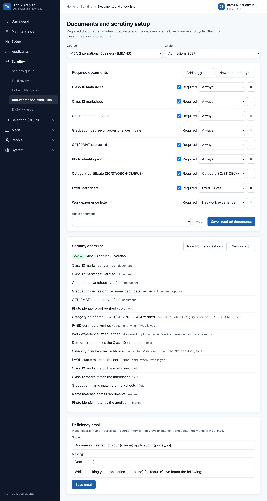
Documents and checklists for a course
Bringing documents in
Imports → Import documents: upload a ZIP file whose files are named by application number and document, or a list of links from the portal. Staff can also upload a file on the application's Documents tab. Every file is checked for type and size, kept as a new version, and virus-scanned. A file that fails the scan is quarantined and never opened.
Documents are private. Opening one creates a link valid for 5 minutes for you only, and every opening is recorded.
Doing scrutiny
Find the application in the Scrutiny queue (a Central Admin can assign applications to officers), or open it from Applications.
On the Scrutiny tab click Start scrutiny.
On the Documents tab, open each file and click Verify, or Reject with a reason.
On the Scrutiny tab, mark each check Met, Not met or Not applicable. A field check marked Met locks that field, so a later import cannot change it silently.
Click Mark complete when all checks are done. If something is missing, click Mark deficient.
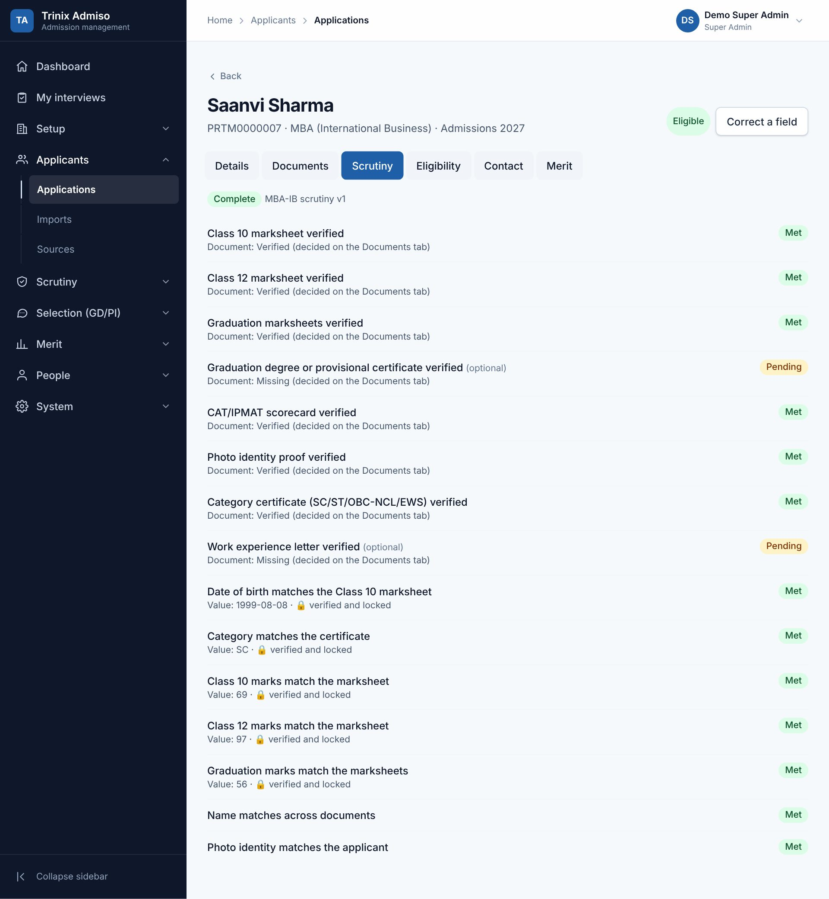
The scrutiny checklist of an application
Deficiency emails
After Mark deficient, the system drafts an email listing what is missing, with a reply-by date (7 days by default, changeable). Click Review and send, check the text and send it. When the applicant replies, attach what they sent, and the scrutiny continues.
Field reviews
When a later import brings a different value for a field that is already verified, the change waits in Field reviews. Accept it or keep the old value, with a reason.
Eligibility
Eligibility rules (per course and cycle): enter IIFT's minimums, for example graduation marks of at least 50%, with relaxations for categories or PwBD (e.g. 45% for SC/ST/PwD). Suggested rules can be loaded as a draft. A rule set is used only after it is approved with a source reference (e.g. "Prospectus 2027, section 4").
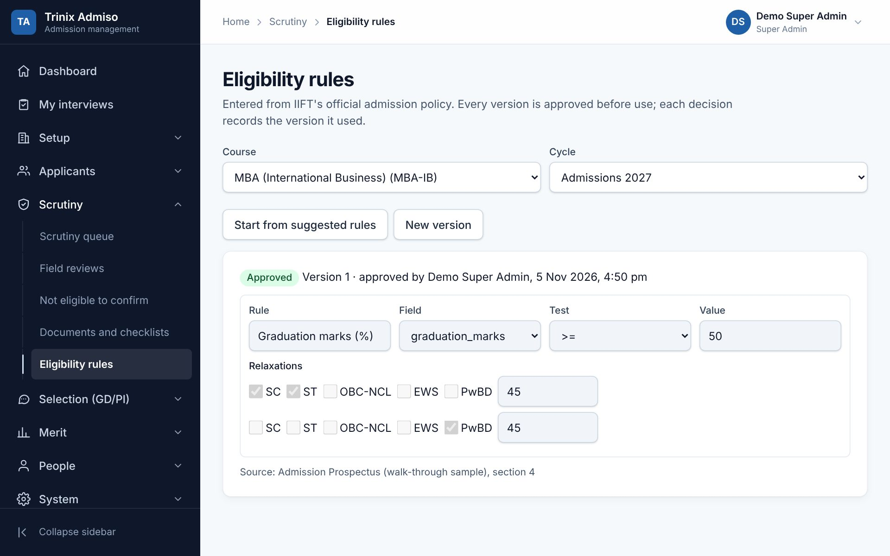
Eligibility rules with category relaxations
On an application's Eligibility tab, the system shows how the applicant measures against each rule. A rule on a field not yet verified shows "incomplete". Record the decision: Eligible, Provisional (with a condition, e.g. final marks due), or Not eligible (with a reason).
"Not eligible" needs a second person. It stays pending until a Committee Chairperson or Central Admin confirms it under Not eligible to confirm.
Chapter 7 · Menu: Selection (GD/PI)
Selection (GD/PI)
Stages and criteria (each cycle)
Stages and criteria (choose the course and cycle) defines the selection stages, e.g. WAT, GD, PI for MBA and WAT, PI for IPM. For each stage the admin sets:
Criteria and maximum marks, e.g. Content 10 and Communication 10. These are set for every cycle; Copy stages and criteria brings last cycle's set in to edit. Once marks are entered, the criteria can no longer change.
Remarks required: always, never, or only when the total is below a value.
Stage result from panel members' totals: the formula combining the members' marks. Use AVG (average), MEDIAN, or a formula such as (SUM - MAX - MIN) / (COUNT - 2), which drops the highest and lowest marks. Members needed for this formula: with fewer members marking, the plain average is used. The formula cannot change once any result in the stage is locked.
Flag a member's total this far from the average (optional): highlights unusual marks.
For a later stage (e.g. PI): Panel sees marks from earlier stages, and Minimum GD average to be sent here (optional).
Stages, criteria and settings
Call lists: who is called for GD/PI
IIFT shortlists before importing, so by default every candidate imported for a round is called (the round's setting "Candidates imported for this round are called", on the round page). A call list is then only a cross-check: it flags imported candidates below the cut-offs and sends no emails. Untick the setting to let the published call list decide who is called.
Call lists → choose course, cycle and round → Enter cut-offs (or New version).
+ Add cut-off: e.g. CAT percentile ≥ a value for each category (GEN, EWS, OBC-NCL, SC, ST, PwBD). A PwBD applicant is called if they meet either their category's value or the PwBD value.
Give the source (IIFT policy or committee decision). A Committee Chairperson or Central Admin clicks Approve.
Run the cut-offs: every applicant of the round is shown as called or not called, with the reason. You can change individual applicants, with a reason.
A different person clicks Publish and email the called. Each called applicant gets an email.
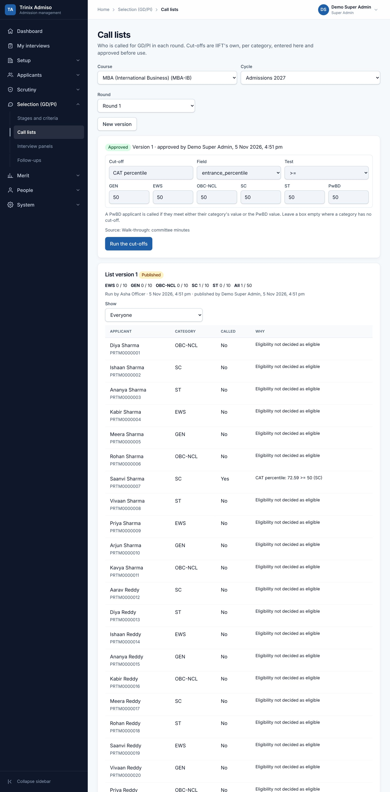
Cut-offs per category and the resulting call list
Interview panels
Interview panels → New panel: the stage, round, name, date, and in person (location and room, in any city) or online (meeting link). On the panel page:
Members: search for faculty or committee members and add them. A chair is optional.
Slots: start and end time (IST) and how many candidates. Use 8–10 for a GD group, or 1 for a PI. How many back to back makes a series of slots at once.
Schedule an applicant books one called applicant into a slot. Fill and email fills the free places, optionally only with applicants from one city.
A GD panel: members, slots and candidates
Automatic allocation, with changes by hand
On Interview panels, two buttons do the allocation for a whole stage. Both show a preview, and nothing is saved or emailed until you confirm.
Allocate candidates automatically: called applicants not yet scheduled for the stage are spread over the stage's panels. The order is the applicant's GD/PI centre preference 1, 2, 3, then their city, then any other in-person centre, then online. Everyone who can get their first choice is placed before anyone gets a second choice, and panels are filled evenly. For PI, only applicants whose GD result is locked are placed, in a slot after their GD.
Slot order: in Stages and criteria, each stage has up to three keys (name, gender, date of birth, application number, each ascending or descending) that decide the order in which candidates fill the slots after their centre preference.
Different panel for PI: if a PI panel has a member who already marked the candidate in GD, a warning names them. It does not block; move the candidate if needed.
Assign faculty automatically: fills panels with the number of members you choose from the people who can mark, optionally only from one campus. Work is spread evenly and nobody is on two panels at the same time.
Allocate candidates automatically
Assign faculty automatically
Changes by hand on the panel page: Move a candidate to another slot, Swap two candidates (on any panels of the same stage), or Cancel. Each needs a reason, and moved applicants are emailed the new time. A reminder email goes to every applicant the day before their interview.
The system refuses clashes: an applicant in two overlapping slots or twice in a stage, a full slot, a member on two panels at once, or a member who has declared a conflict of interest with the applicant.
Results and sending candidates on to PI
The panel's Results tab shows each candidate's marks from every member, the stage result and any unusual marks. When everyone has submitted, the result is Locked. Locked GD candidates can be sent on to a PI panel: tick them, choose the panel, and each gets the next free slot after their GD, with an email.
Panel results and sending on to PI
Applicant contact and follow-ups
The Contact tab of an application records every call or email: how (call made or received, email sent or received), the outcome (reached, no answer, confirmed attendance, asked to reschedule, …), a note, and an optional follow-up date. From the same form you can schedule or move the interview, which emails the applicant. Follow-ups lists what is due today or earlier; click Mark done when finished.
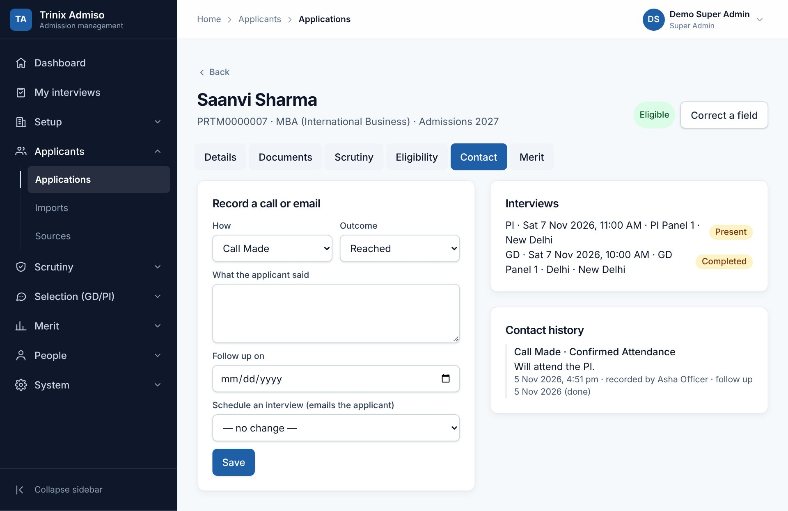
The Contact tab of an application
Chapter 8 · For panel members · Menu: My interviews
Marking interviews
Panel members mark on their own phone or tablet during the GD or PI. An internet connection is needed; marks are saved as you type.
Sign in and open My interviews. Choose the date if it is not today.
Your panel, venue (or meeting link) and the time slots are shown. Tap a slot.
When a candidate arrives, tap Present (or Absent). On a panel without a chair, any member can do this.
Enter the marks for each criterion. In a GD slot you see the whole group, one card per candidate. In a PI slot you see one candidate, with − and + buttons that change the marks in steps of 0.5. "✓ Saved" shows that your marks are stored.
Add remarks where the stage requires them.
Tap Submit marks (PI) or Submit marks for this group (GD). Submitted marks are locked.
A GD slot on a phone
A PI slot, showing the GD result
You see other members' marks only after you submit your own.
Made a mistake after submitting? The panel chair or a Central Admin can reopen your marks, with a reason; the earlier marks are kept in the history.
If you know a candidate personally, tap Declare a conflict of interest before marking. You will not mark that candidate, and the office can move them.
The application link opens the candidate's full application and documents, for your own candidates only. Each opening is recorded.
Chapter 9 · Menu: Merit
Merit
The merit formula
Merit formula (choose the course and cycle) holds IIFT's formula as a weighted sum of components. Start a formula (or New version), then add each component:
Setting
Meaning
Reads
The value used: entrance percentile or score, a sectional score, academic marks (%), work experience (months), a selection stage result (WAT/GD/PI), or an applicant field with a points table
How
Scale to weight (value ÷ highest possible value × weight), Ranges → points (e.g. months of experience to points), Value → points, or As is × weight
Weight, cap
Points at the highest value (or a multiplier), and an optional maximum
When missing
Leave the candidate out (with the reason), or count as zero
Minimum to be ranked
Optional, per category, e.g. a minimum PI result
Also set the tie-break order (e.g. higher PI result first, then higher CAT percentile, then older candidate first), the decimals (always rounded half up), and the source. Try it on one candidate shows the calculation for any application number before you approve. A Committee Chairperson or Central Admin clicks Approve.
A merit formula with two components and a tie-break
Academic marks are used as the percentage the applicant gave. If only a CGPA was given, the value counts as missing and the list shows "percentage not given".
Merit lists
Merit lists → choose course, cycle and round → Run the formula.
Check the Ranked, Left out (with reasons) and Shared ranks tabs. Click a name for the full breakdown. Filter by category to see category ranks, or by PwBD.
Candidates still level after every tie-break share a rank. The committee orders them on the Shared ranks tab, with a reason.
A different person clicks Approve, then Publish. A published list is read-only.
A published merit list
One candidate's breakdown
Excel exports the full breakdown for the committee. Notice PDF gives a notice-board list (number, name, category, total and ranks, with no contact details). Both are recorded.
Check for changes compares the list with today's data and re-calculates the stored data to confirm the result. If marks are reopened or a field is corrected after publishing, the list is marked out of date; run a new version, and Compare shows what changed.
Chapter 10 · Menu: Seats and offers
Seats and offers
After the merit list is published, seats are allotted campus by campus using merit, each candidate's campus preferences, the seats each campus has and the year's reservation rules. Offers go out by email. Applicants never log in: staff record every answer and payment.
No percentage, amount or rule is built into the software. Everything below is entered by the admin from IIFT's official policy (Government of India norms) and approved by a second person.
1. Categories
Categories lists the reservation categories. Load the suggested list adds names only; edit them to match the policy. There are three kinds:
Kind
Meaning
Examples
Vertical
Each applicant has exactly one. One of them is the open (unreserved) category.
Open/General, SC, ST, OBC-NCL, EWS
Horizontal
Seats set aside inside each vertical category
PwBD
Supernumerary
Seats added on top of the intake
Kashmiri Migrants, Foreign Nationals, NRI
The portal file's Category column must use these codes. Horizontal and supernumerary categories come in an Additional categories column (e.g. KM; NRI). Staff cannot change an applicant's category; a corrected value comes only from a new import, through update review.
2. Reservation rules (every year)
Reservation rules → choose the cycle → Start the rule set (or copy last year's). Enter:
each reserved vertical category's percentage of the intake (the open category takes the rest);
each horizontal category's percentage within each vertical category;
the rounding of seat counts (largest remainder, half up, down or up);
the conversion of unfilled seats, in order (e.g. OBC-NCL → Open, SC-PwBD → SC), optionally only from a given round;
the source (government order, notification or committee decision).
A Committee Chairperson or Central Admin clicks Approve (never the person who drafted it). An approved rule set is read-only; a change is a new version.
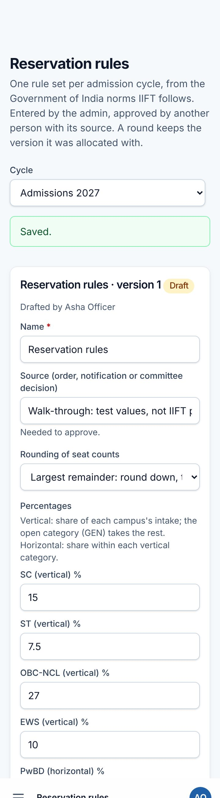
A draft rule set (test values)
3. Seats and offer settings
Seats and offer settings → course, cycle and round → Calculate seats. The table shows the seats for every campus and category. Click a number to adjust it, with a reason (for example, to enter supernumerary seats). Another person approves the matrix.
Below the table, set the offer settings for the course and cycle: days to reply and pay, the reminder days (e.g. 3 and 1 days before), the amount to accept an offer, the waitlist hold amount and days to pay it, and the waitlist size for each category (e.g. 2 means twice the category's seats).
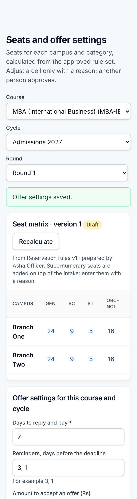
The seat matrix and offer settings
4. Seat allocation
Seat allocation → Run the allocation. It needs the published merit list and the approved seat matrix.
Candidates are taken in merit order. Each goes through their campus preferences in order and, at each campus, tries an open seat first (everyone competes for open seats on merit), then a seat of their own category, then horizontal and supernumerary seats. Everyone gets the most preferred campus where a seat is free.
Seats still unfilled are converted by the rule set and the run repeats until nothing changes. The log lists every conversion.
Everyone not placed is waitlisted in merit order, up to the waitlist size of their category; the rest are "not offered".
Check the table of seats, filled seats and the last rank for each campus and category, and search any candidate to see why.
A different person clicks Approve and publish. Offers and waitlist emails go out at once.
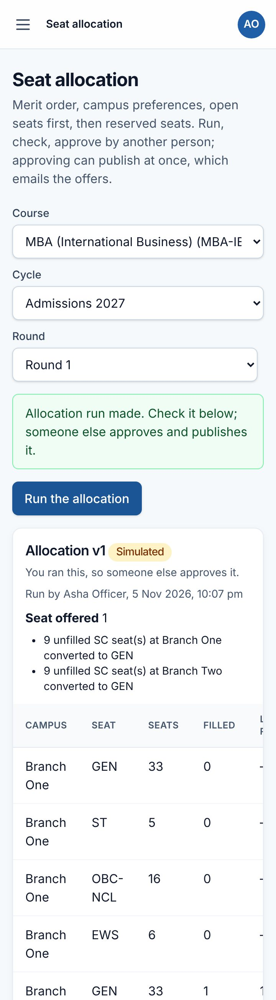
An allocation run before approval
If two candidates share a merit rank and only one of them would get a seat, the run stops: resolve the tie in the merit list first.
5. Offers, payments and the waitlist
Offers and waitlist has three tabs: Offers, Waitlist and Past the deadline.
Record answer: accepts or declines, by phone or email (for email, attach the applicant's reply). An acceptance needs the payment: amount, mode, reference (UTR or DD number), date and the receipt.
Moving up: tick "Wants to move up" when the candidate prefers a campus they ranked higher. They keep their seat; if a seat frees up at the preferred campus they get a move-up offer, and the old seat is released only when they accept it.
Waitlist hold: waitlisted candidates are emailed (without a position number) the amount to pay to keep their place. Record hold payment marks the place as held. Only held places are considered when seats free up.
Nothing lapses on its own. The Past the deadline tab lists offers without an answer or payment, and unpaid waitlist places. Confirm each one with Confirm lapse.
Freed seats (declines, confirmed lapses, withdrawals, moves) start a vacancy run automatically. It waits on the Seat allocation page for a second person to approve and publish.
Reminder emails go out automatically on the reminder days, at most once a day.
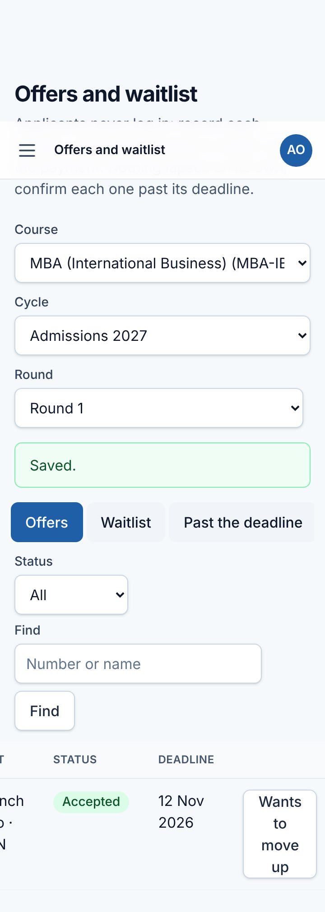
An offer accepted by phone, with its payment
6. Payments (Accounts)
Payments lists payments waiting for a check. Accounts compares each with the bank statement and clicks Verify or Reject with a reason. You cannot verify a payment you recorded. A rejected payment flags the offer so staff record a new payment. Payments are never edited or deleted.
The application's Offer tab shows every offer, answer, payment and who recorded each.
Chapter 11 · Menu: Admission and accounts
Admission and accounts
After an offer is accepted and paid, the candidate is admitted, owes the fees of their campus, pays them in instalments, and may withdraw and get a refund. No payment gateway is used: money moves by bank transfer or DD, and the system records it. Every entry is checked by a second person, and nothing is edited or deleted: mistakes are corrected with returns, reversals and adjustments.
Fee amounts, concessions, refund slabs and the admission number format are entered by the admin from IIFT's notifications. None of them is built into the software.
1. Fee structure (every cycle)
Fee structure → choose the cycle → Start the fee structure (or copy last year's). Enter:
Fee heads, e.g. tuition, hostel and boarding, a security deposit. Tick "Refundable in full" for a deposit, and "Concessions apply" where a concession can apply.
Instalments with due dates.
The amount of each head in each instalment, for every campus and course.
Concessions, e.g. "SC, ST, PwBD: 50% of tuition". If two apply, the larger is used.
The source (fee notification).
Another person clicks Approve. An admitted candidate keeps the version they were admitted under.
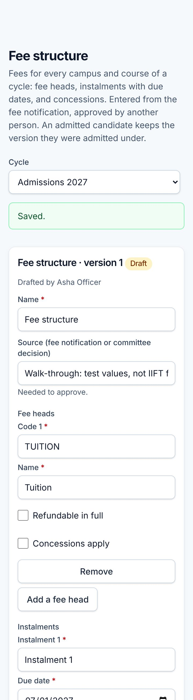
Drafting a fee structure (test values)
2. Refund policy (every cycle)
Refund policy → Load the suggested UGC slabs. The draft has slabs counted from the campus's last date of admission: full refund less a processing fee 15 or more days before, then 90%, 80%, 50%, and nothing more than 30 days after. Check every slab against the current UGC order, add the source, and have another person approve it. Enter each campus's last date of admission on the round page.
3. Confirming admissions
Admissions → course, cycle and round. First set the admission number pattern at the bottom, from the parts {YEAR}, {AY}, {CYCLE}, {ROUND}, {CAMPUS}, {COURSE} and a serial {SEQ:4} (e.g. {COURSE}/{YEAR}/{CAMPUS}/{SEQ:4} → MBA-IB/2027/DEL/0001), and the fee reminder days.
The Ready to confirm tab lists accepted offers and anything still in the way: an unverified acceptance payment, documents not verified, a move-up offer waiting, or no approved fee structure.
When nothing is in the way, the Admission Officer clicks Confirm admission. Optionally add conditions with deadlines, e.g. "degree proof by 31 October".
The candidate gets the admission number by email. Their dues are worked out from the fee structure and concessions. The acceptance amount, and a waitlist hold if any, count towards the fees.
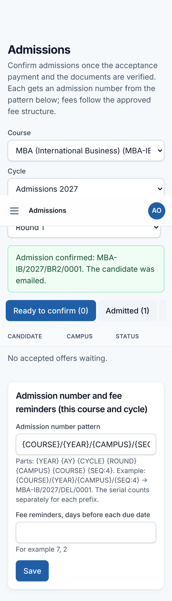
An admission confirmed, with its number
The Conditions overdue tab lists conditions past their deadline. Nothing is cancelled on its own: mark the condition met or waived (with a reason), or record a cancellation.
4. Fees tab and payments
The application's Fees tab shows the dues for each instalment and head, concessions, adjustments, what is paid and the balance. Only verified payments count.
Record a payment: amount, mode, reference (UTR, DD or challan), date, payer and the receipt. It goes to the oldest dues first.
Accounts, on Payments, clicks Verify (the candidate is emailed a PDF receipt), Return for correction (staff then record a corrected entry), or Reject with a reason.
Reverse a verified payment that later fails, e.g. a bounced DD. Another person approves the reversal.
Adjust a due, e.g. a waiver approved by the committee, with a reason and its source. Another person approves it.
Reminder emails go out on the reminder days before each due date.
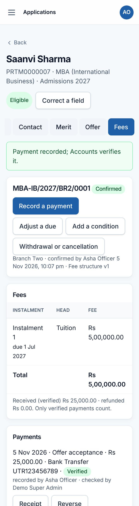
The Fees tab after a payment is recorded
5. Withdrawal and refunds
On the Fees tab, Withdrawal or cancellation: the date received, how (for an email, attach it), and the reason.
Another person confirms it on the Admissions page (Withdrawals to confirm). The admission ends, the seat is freed (a vacancy run is prepared for approval), and a refund request is prepared.
Refunds shows the calculation line by line:
fully refundable heads;
the slab percentage of the other fees paid;
the processing fee;
any excess paid;
refunds already made.
Add deductions if any, with reasons. Another person approves, returns or rejects it. An approved amount can never exceed what is refundable.
The money is paid outside the system. Record each refund payment (partial payments are allowed); another person verifies each. The request becomes "refunded" when the approved amount is paid.
Waitlist holds of candidates who never got a seat appear under "Waitlist holds to refund" and are refunded in full. A refund never brings back an offer or seat.
6. Bank statements, dashboard and reports
Bank statements: upload the bank's statement (CSV or Excel). Credits are matched to recorded payments by reference and amount. Unmatched lines and payments are listed for you to match by hand.
Dashboard and reports:
the admission funnel by category (imported, called, interviewed, ranked, offered, accepted, waitlisted, admitted, withdrawn);
seats by campus;
fees due against received;
collections by date and outstanding dues, with Excel exports.
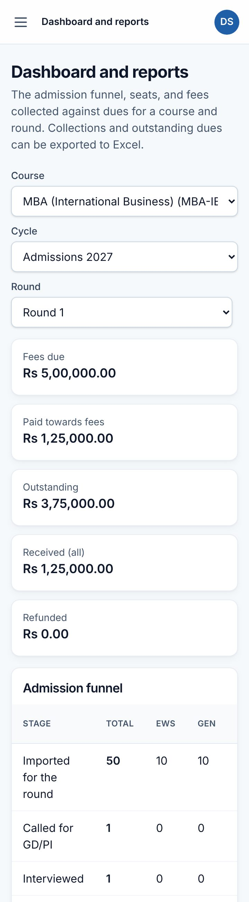
Dashboard: money and the admission funnel
Chapter 12 · Menu: System · For IT and administrators
System administration
Installation (first time)
Upload the release package to the server so that the web address points at its public folder, then open https://<your site>/install. The wizard:
checks the server (PHP 8.3 and its extensions, writable folders; Redis and ClamAV can be added later);
connects to the database (MySQL 8);
sets the site address, time zone (Asia/Kolkata) and email server, with a test email;
sets file storage, Redis and virus scanning;
saves the settings, creates the tables, and creates the first Super Admin.
The wizard closes for good once the first Super Admin exists. The last page shows the cron job to add, which runs every minute. It sends reminders and, on servers without Redis, also processes imports and emails, so these do not move without it. Full steps for shared hosting are in the deployment guide that comes with the system.
Updates
Upload the new release over the old one, keeping the .env file and the storage folder. Then an IT Administrator opens System → Maintenance. If database updates are pending they are listed: take a backup first, type MIGRATE and your password, and click Apply updates.
Maintenance: pending database updates
Health, settings, audit
System health: database, Redis, storage, the virus scanner, the scheduler (cron) and the queues. A warning here needs IT attention.
Settings: for example the session timeout, sign-in lock rules, invitation expiry, support email, deficiency reply days, and allowed document-link websites. Technical settings belong to the IT Administrator.
Audit log: every change, with who, when, the old and new values and the reason. Filter by date, person, action or record.
System health
Personal data. Applicant data is covered by the DPDP Act 2023. Give accounts only to people who need them, keep the site on HTTPS, use real virus scanning (ClamAV) before real documents are uploaded, and keep backups off the server.
Chapter 13
Roles at a glance
Each role can be limited to a campus, course and/or cycle. The exact permissions are under People → Roles and permissions.
Their campus: users and teams, applications, documents, scrutiny, contact, panels, viewing merit, offers at their campus
Committee Chairperson
No
Confirming "not eligible", approving call lists and merit formulas, approving and publishing merit lists, reservation rules, seat matrices and allocations, viewing and reopening marks, marking
Committee Member
No
Marking candidates on their panels
Admission Cell Officer
No
Imports, applications, documents, scrutiny, eligibility, call lists, panels, contact, merit formulas and lists, reservation rules, seats and allocation runs (running, not approving), offers and payments
Admission Cell Staff
No
Documents, applicant contact, scheduling interviews, recording offer answers and payments
Faculty / Panel Member
No
My interviews: marking own candidates
Reporting Officer
No
Viewing approved information such as merit lists
Accounts Officer / Staff
Officer: Yes
Staff record payments and refund payments; the Officer verifies, returns or rejects them, approves reversals, adjustments and refunds
The person who uploads an import, runs a call list or runs a merit list can never approve or publish the same item. This applies even to Super Admins.
Chapter 14
Questions and troubleshooting
Question
Answer
I cannot see a menu item or a page says "Not found".
Your role or scope does not include it. Pages outside your campus, course or cycle show "Not found". Ask your administrator.
My import stays "Queued" or emails do not arrive.
The every-minute cron job is not running. IT: check System health → Scheduler.
Why can I not approve this import?
You uploaded it. Another person with approval rights must approve it.
An import shows "Updates" for an applicant.
The applicant was imported before and the file has different values. Check them in the preview; verified fields go to Field reviews instead of changing.
I cannot enter marks for a candidate.
The candidate is not marked Present yet, your marks are already submitted (ask the chair to reopen), or you declared a conflict of interest.
The stage formula cannot be changed.
Results in that stage are already locked. The formula must be set before results are locked.
A merit list says "out of date".
Data changed after publishing (e.g. marks reopened). Run the formula again for a new version and compare.
Can a round start before the academic year?
Yes. Admission rounds for 2027-28 can start in December 2026. They must end by the end of the academic year.
Does an applicant ever sign in?
No. Applicants are contacted by email and phone; staff record their replies on the Contact tab.
I lost my phone with the authenticator app.
Sign in with one of your recovery codes, then set up two-factor again under Account. Without codes, ask the IT Administrator.
Terms used
Term
Meaning
Branch / campus
One of the institute's campuses (Delhi, Kolkata, Kakinada, GIFT City)
Offering
A course at a campus in a cycle, with its seats (intake)
Cycle
One admission year's process, e.g. Admissions 2027 for the 2027-28 academic year
Round
A stage of admissions with its own shortlisted applicants and dates (Round 1, Round 2, …)
Source
Where applicant data comes from, normally the admission portal
Batch
One import (a file or an API push), checked and approved as a whole
Scrutiny
Checking documents and details against the course's checklist
Call list
Who is called for the selection process (GD/PI) in a round
Stage result
A candidate's combined GD/PI/WAT result from all panel members, by the stage's formula
Merit list
Candidates ranked by the approved merit formula, per course and round
PwBD
Persons with benchmark disabilities
2FA
Two-factor sign-in: password plus a code from an authenticator app
Trinix Admission · User Manual · Version 0.8 · November 2026